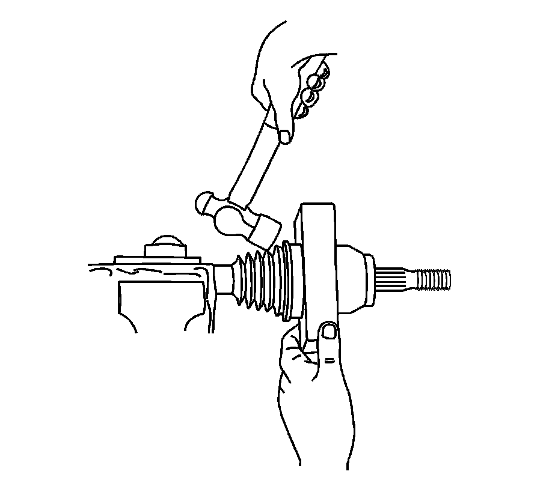
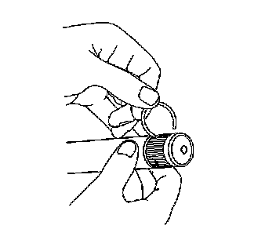
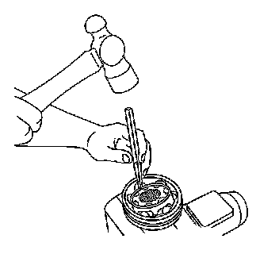
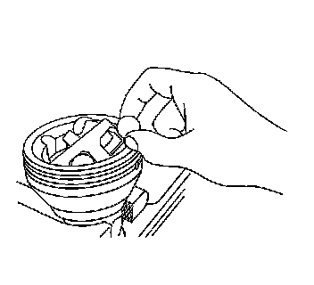
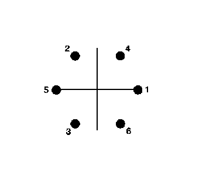
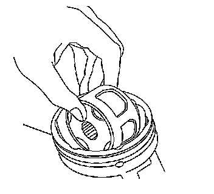
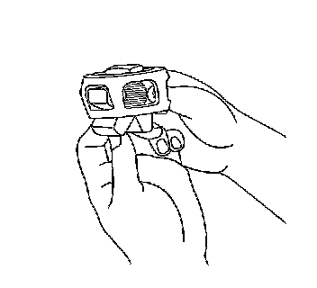
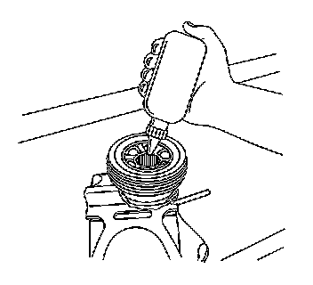

Front Wheel Drive Shaft Outer Joint and Boot Replacement
Front Wheel Drive Shaft Outer Joint and Boot Replacement
Tools Required
J 42572 Drive Shaft Seal Clamp Pliers
Disassembly Procedure
This procedure is to be performed only after the wheel drive shaft has been removed from the vehicle. Refer to Front Wheel Drive Shaft Replacement - Left Side (Front Wheel Drive Shaft Replacement - Left) or Front Wheel Drive Shaft Replacement - Right Side (Front Wheel Drive Shaft Replacement - Right) .

1. Wrap a shop towel around the axle shaft.
2. Place the wheel drive shaft horizontally in a bench vise.
3. Using a side cutter or other suitable tool, remove the large seal retaining clamp from the outer joint seal and discard the clamp.
4. Using a side cutter or other suitable tool, remove the small seal retaining clamp from the joint seal and discard the clamp.
5. Separate the seal from the joint outer race at the large diameter end.
6. Slide the seal away from the joint face.
7. Wipe the grease from the face of the joint inner race, cage, balls, etc.
8. Remove the outer joint from the axle shaft using the following steps:
1. Hold the outer joint housing horizontally to the shaft.
2. Position a wood block between the seal and the joint, on the joint face.
3. Strike the wood block with a hammer to compress the axle shaft retaining clip. If the joint refuses to move, a brass drift can be used against the face of the inner race to compress the axle shaft retaining clip.
4. Continue to strike the wood block in order to remove the outer joint from the axle shaft.

9. Remove and discard the axle shaft retaining ring from the axle shaft.

10. Remove the seal from the axle shaft.
11. Remove the wheel drive shaft from the vise.

12. Wrap a shop towel around the joint outer race splined shaft.
13. Place the outer race vertically in a bench vise.
14. Use a brass drift and hammer to gently tap on the wheel drive shaft joints inner cage, until it is tilted enough to remove the first ball.

15. Remove the exposed ball.
Use a small screwdriver to aid in removal, if necessary.
16. Position the cage and inner race so they are level.

17. Repeat steps 14-16 in the removal sequence as shown until all of the balls are removed.

18. Position the cage and the inner race 90 degrees to the centerline of the outer race.
19. Align the cage windows with the lands of the outer race.
20. Lift to remove the cage and the inner race from the outer race.

21. Position the cage and inner race so that the larger radius corners of the cage windows are up.
22. Rotate the inner race 90 degrees to the centerline of the cage.
23. Align the lands of the inner race with the windows of the cage.
24. Insert an inner race land into a cage window.
25. Pivot the inner race down and remove it from the cage.
Important: All traces of old grease and any contaminates must be removed.
26. Clean the following parts thoroughly with clean solvent:
* The inner race
* The outer race
* The cage
* The balls
* The axle shaft exposed end
27. Thoroughly air dry all of the parts.
28. Inspect the following parts for damaged and/or wear:
* The inner race
* The outer race
* The cage
* The balls
* The axle shaft exposed end
Assembly Procedure
1. Position the cage so the larger radius corners of the cage windows are up.
2. Position the inner race 90 degrees to the centerline of the cage.
3. Begin to insert the inner race up through the bottom of the cage.
4. Align a land of the inner race to a window of the cage.
5. Insert the inner race land into the cage window.
6. Rotate the remainder of the inner race into the cage.
7. Rotate the inner race within the cage so that the grooved surface of the inner race is facing up.
Important: Ensure that the inner race is fully assembled into the cage.
8. Align the inner race ball tracks with the cage windows.
9. Wrap a shop towel around the joint outer race splined shaft.
10. Place the outer race vertically in a bench vise.
11. Position the cage and inner race 90 degrees to the centerline of the outer race.
12. Align 2 cage windows at 0 and 180 degrees, within the outer race.
Rotate the inner race and cage assembly downward in the vertical plane.
Important: The inner race ring groove must be positioned down.
13. Position the cage and inner race so they are level.
14. Align the cage windows and inner race ball tracks with the outer race ball tracks.
15. Position a cage window and inner race ball track for ball installation.
1. Press down on the cage following one of the outer race ball tracks. The opposing cage window and inner race ball track will be accessible for ball installation.
2. After installing the first ball, use a brass drift and a hammer to tap gently on the cage, in order to drive the cage and inner race down completely.
Important: No gap should exist between the ball and the inner race ball track.
16. Insert a ball through the cage window onto the inner race ball track.
Tap the ball lightly with a plastic tipped hammer.
17. Position the cage and inner race so they are level.
Important: The ball installation sequence must be followed as shown.
18. Repeat steps 17-19 in the installation sequence as shown, until all of the balls are installed.

19. Insert approximately 60 percent of the grease from the service kit into the outer joint.
1. Spread 60 percent of the grease onto the ball tracks, the balls, the cage and the inner race.
2. Spread the remainder of the grease into the bottom of the outer race.
20. Remove the outer joint from the bench vise.
21. Wrap a shop towel around the axle shaft.
22. Place the wheel drive shaft horizontally in a bench vise.
23. Install a new small seal retaining clamp onto the axle shaft.
24. Install the seal onto the axle shaft.
25. Install a new retaining ring to the axle shaft.

26. Position the outer joint horizontally.
27. Engage the inner race splines onto the axle shaft splines.
28. Compress the axle shaft retaining ring.
1. Press the end of the retaining ring, using a flat-bladed tool, into the axle shaft groove while firmly pressing the outer joint onto the axle shaft.
2. Continue to work around the retaining ring, until it is compressed.

Important: The axle shaft and inner race must be fully seated to each other.
29. Install the outer joint to the axle shaft.
1. Position a wood block over the end of the outer joint threaded shaft.
2. Use a hammer to drive the outer joint onto the shaft.
3. Continue to drive the outer joint until the outer joint seats fully onto the axle shaft.

30. Insert the remaining grease from the service kit into the seal.

31. Position the small seal retaining clamp (2) into the seal boot groove.
32. Position the seal and small retaining clamp to the axle shaft boot groove (3) as shown.

Notice: Refer to Fastener Notice (Fastener Notice) .
Important: The seal retaining clamp must not be over-tightened or under-tightened.
33. Using the J 42572 , crimp the small seal retaining clamp.
Tighten the small seal clamp until the base of the omega ohm shape has a gap of 1 mm (0.039 in).
The clamping hold time must be no less than 2 seconds.

34. Position the large seal retaining clamp (1) onto the seal (2).
35. Position the seal and large retaining clamp to the joint outer race (3) as shown.
Important: The seal must not be dimpled, stretched or otherwise deformed.
36. Inspect the seal for proper shape.
If the seal is not shaped correctly, equalize the pressure in the seal by lifting the seal edge slightly and shape the seal properly by hand.
37. Inspect the seal for damage.
If the seal has been cut or punctured during assembly, you must discard and replace the seal.
Important: The seal retaining clamp must not be over-tightened or under-tightened.
38. Using the J 42572 , crimp the large seal retaining clamp.
Tighten the large seal clamp until the base of the omega ohm shape has a gap of 1 mm (0.039 in).
The clamping hold time must be no less than 2 seconds.
39. Inspect the outer joint for smooth operation. This will also distribute the grease within the joint.
1. Hold the wheel drive shaft vertically, with the outer joint at the bottom.
2. Rotate the wheel drive shaft 4 or 5 times in a circular motion.